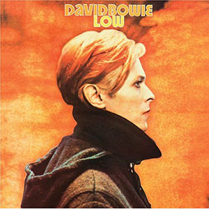
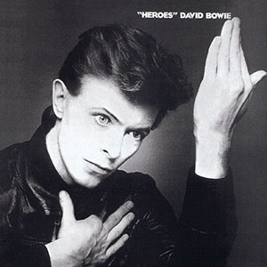
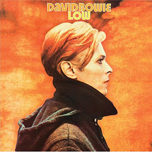
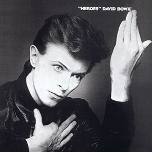

DAVID BOWIE Works

ALADDIN SANE
前作までのフォーク・ロック風味が一掃され、ソリッドでタイトなロックンロール色が強まった痛快な作品。
LOW
重厚なシンセサイザーの音色が時代を映し出す。ヒリヒリした緊張感がたまらない傑作。
HEROES
「たった１日ならヒーローになれる」と歌ったタイトル曲は彼の代表作となった。
前作までのフォーク・ロック風味が一掃され、ソリッドでタイトなロックンロール色が強まった痛快な作品。
重厚なシンセサイザーの音色が時代を映し出す。ヒリヒリした緊張感がたまらない傑作。
「たった１日ならヒーローになれる」と歌ったタイトル曲は彼の代表作となった。